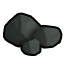
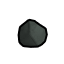
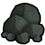
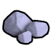
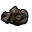
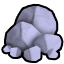
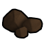
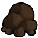

原始按消耗它的配方研究档HSK本地补丁×1上游补丁×1原料级·原始·铁矿石Iron
不可塑形建造/打造时选不到这种材质;仅作配方原料(被 10 条配方消耗)
① 起点 · Core_SK 的 Defs 写 Things/Item/Ores/Iron (125,140,131)
 aCore_SK
aCore_SK
bCore_SK cCore_SK
cCore_SK③ 生效(终态) Things/Item/Ores/Iron (125,140,131) ← 10_Vile贴图还原.xml

aCore_SK bCore_SK
bCore_SK
cCore_SKThings/Item/Ores/Iron StackCount (125,140,131)(125,140,131)被10条配方消耗贴图链 3 段
护甲 —/—/— 利钝 —/— 价值 2 质量 0.30 Bulk 0.30
stuff Matty
HSK SLD
产自 Convert to iron ore(核合成转化器/Transformation of matter II)
源 Core_SK
Items_Resource_Ore.xml
原始按消耗它的配方研究档HSK本地补丁×1上游补丁×2原料级·原始·锡石Tin
不可塑形建造/打造时选不到这种材质;仅作配方原料(被 6 条配方消耗)
① 起点 · Core_SK 的 Defs 写 Things/Item/Ores/Tin (210,210,255)
 aCore_SK
aCore_SK
bCore_SK cCore_SK
cCore_SK② Vile 换成 Things/Item/Ores/Magnetite (137,124,121) ← Resource_Ores_Patch.xml
 aVile's Materials Science
aVile's Materials Science
bVile's Materials Science cVile's Materials Science
cVile's Materials Science③ 生效(终态) Things/Item/Ores/Tin (210,210,255) ← 10_Vile贴图还原.xml
 aCore_SK
aCore_SK bCore_SK
bCore_SK
cCore_SKThings/Item/Ores/Tin StackCount (210,210,255)(210,210,255)被6条配方消耗贴图链 3 段
护甲 —/—/— 利钝 0.50/0.50 价值 2 质量 0.15 Bulk 0.15
stuff —
HSK HCM
产自 Convert to tin ore(核合成转化器/Transformation of matter II)
源 Core_SK
Items_Resource_Ore.xml
中世纪产出研究档Vile本地补丁×1原料级·中世纪·沼泽铁（铁，锰）BogIron
不可塑形建造/打造时选不到这种材质;仅作配方原料(被 4 条配方消耗)
 生效·aCore_SK
生效·aCore_SK
生效·bCore_SK
生效·cCore_SKThings/Item/Ores/Iron StackCount (125,90,60)被4条配方消耗
护甲 —/—/— 利钝 —/— 价值 2 质量 0.25 Bulk 0.25
stuff —
HSK SLD
产自 extract bog iron from peat(铁匠工坊/Bog Iron)
源 Vile's Materials Science
Ores_New.xml